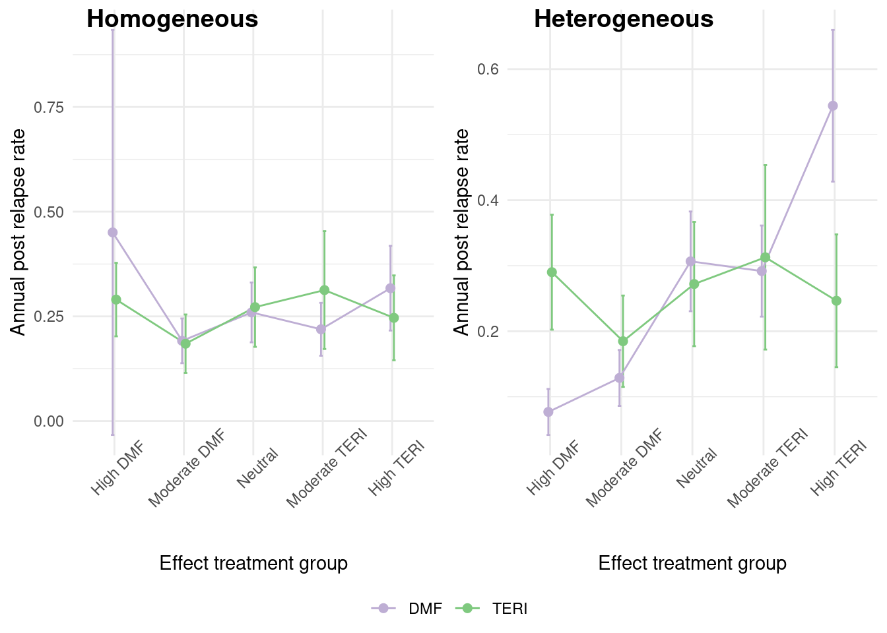

# Load the required packages and additional functions
source("resources/chapter 09/functions.r") 5 Dealing with missing data
Thomas Debray ![]()
5.1 Main Analysis
The main objective of this analysis is to assess whether the number of episodes (y) occurring within specific time periods (years) differs between the treatment groups (1: DMF and 0: TERI). To address potential confounding factors, the researchers consider variables such as patient age, the log of premedical cost (logPremedicalcost), previous DMT efficacy (prevDMTefficacy), and the number of episodes in previous relapses (prerelapseNum).
When estimating treatment effects from observational data, an assumption is made that the patient populations in both treatment groups are as similar as possible. Various methods for balancing data across treatment groups are proposed, including matching, inverse propensity weighting, stratification, and regression adjustment.
In this case, the focus is specifically on the matching method, which offers advantages over regression adjustment by potentially alleviating issues related to model mis-specification. This includes addressing non-linear relationships between certain confounders and the outcome variable and accounting for treatment effects that may depend on specific confounders (treatment-confounder interaction terms). Propensity scores are used to match subjects in the treatment groups.
Moreover, intentionally introducing incomplete covariate variables in this example adds complexity to the propensity score estimation. Depending on the propensity score estimation technique employed, it may be necessary to incorporate an imputation step. For instance, logistic regression estimation requires complete data for all observations, while XGBoost is robust to missing data .
To estimate marginal treatment effects, the g-computation method is employed . This method involves specifying a model for the outcome dependent on the treatment and covariates. The potential outcomes, i.e., the predicted values of the outcome on treatment (\(y_i^1\)) and control (\(y_i^0\)) for each sample unit \(i\), are estimated. The marginal treatment effect is then calculated by contrasting the averaged estimated potential outcomes.
In this example, we consider the estimation of comparative treatment effects in the absence of treatment-effect heterogeneity.
5.2 Estimation workflow
The proposed workflow consists of the following steps:

- Data Exploration: In this step, we examine the observed data to comprehend the variables within the dataset. Our primary focus lies on identifying missing patterns and relationships among observed variables, including missing indicator variables and others. This exploration aids in discerning the most plausible missing mechanisms and suitable imputation techniques. Additionally, field experts’ insights may be incorporated to enhance understanding of the missing process, potentially considering MNAR assumptions.
- Imputation: It is essential to evaluate whether the imputation procedure is necessary or if simpler methods, such as complete case analysis, are more suitable. In case imputation procedures are required, selecting plausible imputation methods that align with the main model analysis is crucial. This involves choosing individual imputation methods for each incomplete variable, determining the predictor variables on the imputation model. Pre_imputation (where imputation values can be deterministically derived from other variables) and Post-imputation (e.g.ensuring imputed values fall within a reasonable range) steps may also considered.
- Data Balancing: Several methods, including PS matching or inverse weighting propensity score, can be utilized. It is required to evaluate the balance, which could be done via visual inspection.(eg.cobalt package). In this example, we estimate propensity scores using logistic regression. For most balancing procedures in R, counterparts specifically designed for imputed datasets are available, such as those in the matchthem R package, which includes PS matching and IPW as done in the matchit R package.
- Model Fit: : It is fit a model to predict the outcomes for each sample unit under each possible treatment value (DMF and TERI), as predictors include the treatment and optionally the baseline covariates and also the propensity score.
- Treatment Estimation & Pooling: For simplicity in this tutorial, we will use the comparison functions from the R matchingmethods package , which can be used for completed data and also from outputs from the imputation process. In the last case, internally the functions calculate the treatment effects on each imputed dataset and pool the estimates using Rubin’s Rules.
Let’s start by preparing the R environment. All the functions used in this tutorial can be found in the resource file functions.r.
5.3 Homogeneous Treatment Effect
In this example, we focus on estimating comparative treatment effects in the absence of heterogeneous treatment effects (HTE).
5.3.1 Generating an Observational Dataset
We can simulate an observational dataset of \(N = 3000\) patients as follows:
data_hom <- generate_data(n = 3000, seed = 1234) The generate_data() function allows the specification of various treatment effect options, easily adjustable by modifying the beta parameter. In this instance, we assume a consistent treatment effect across the entire target population. This dataset currently contains no missing values.
The simulated dataset comprises two treatment groups with variations in baseline characteristics. For example, the figure below illustrates baseline imbalances in covariates such as age.

We can calculate the treatment effect on the complete observed dataset. To do this, we start by balancing the dataset using Propensity Score matching. In this case, the propensity score model uses confounder variables only: age, gender, prevDMTefficacy, logPremedicalcost, and prerelapseNum.
## Apply Matching on the PS for the ATE
mF <- matchit(treatment ~ age + gender + prevDMTefficacy +
logPremedicalcost + prerelapseNum,
data = data_hom,
family = binomial,
method = "full",
caliper = 0.2,
estimand = "ATE",
replace = FALSE)
## Extract matched data
mdata <- match.data(mF)Then, we proceed to model estimation. In this case, a Poisson model is used which assumes that \(y_i \sim \text{Poisson}(\lambda_i)\). In this expression, \(\log(\lambda_i)\) = \(\beta_0\) + \(\beta_1\) treatment + \(\beta_2\) age + \(\beta_3\) gender + \(\beta_4\) prevDMTefficacy + \(\beta_5\) logPremedicalcost + \(\beta_6\) prerelapseNum + \(\beta_7\) numSymptoms + log(years)
Since patient measurements were recorded over varying time frames, the natural logarithm of the years of evaluation is incorporated as an offset in the model. The model is fitted with a glm function, and we include the treatment and the baseline covariates as predictors, which are optional if the data is well balanced. Additionally, it is necessary to specify the matching weights in the glm function.
# Model fit
fit_mod <- glm(as.formula("y ~ treatment + gender + age + logPremedicalcost + prerelapseNum + prevDMTefficacy + numSymptoms + offset(log(years))"),
family = poisson(link = "log"),
data = mdata,
weights = weights)Typically, Poisson models adjust standard errors using robust standard errors to accommodate small values arising from the equidispersion assumption. This correction can be directly applied to the model using the vcovCL() function . However, given that we will calculate the treatment effect using the functions of the marginaleffects package, this step becomes redundant. This package allows specifying HC3 sandwich standard errors during treatment estimation.
Finally, we calculate the Average Treatment Effect (ATE). The ATE is defined as \[\tau_{ATE}=E(y_i^1-y_i^0)\]
But this cannot be directly extracted from the \(\beta_1\) parameter, as the model has \(log(\lambda)\) as the response. We estimate it as: \[\tau_{ATE}=E(\lambda^1_i-\lambda^0_i)\] This can be done with the function avg_comparisons(), from the R package marginaleffect, that calculates the potential outcomes for each unit sample and then combines them to summarize the average effect.
# Estimation of treatment effects with robust standard errors
ATE <- avg_comparisons(fit_mod,
variables = list(treatment = c("TERI","DMF")),
vcov = "HC3",
newdata = mdata,
wts = "weights")
result_ATE <- data.frame( ATE,
analysis = "Full Data")Henceforth, for ease of explanation, we will use the function TE_estimation() attached to the function code that performs all the previous estimation steps at once.
5.3.2 Generating Missing Values
In this example, we focus on the case where confounder variables are incomplete.
Missing values can be generated using the getmissdata() function, considering the following patterns of missingness for the log previous medical cost (logPremedicalcost):
- MAR: missingness depends on
ageandsex - MART: missingness depends on
age,sexand the treatment variabletreatment - MARTY: missingness depends on
age,sex,treatmentand the outcome variabley - MNAR: missingness depends on
age,sexandlogPremedicalcost
Lets select the missing data pattern “MART”
m_data_hom <- get_missdata(data = data_hom, scenario = "MART")After introducing missing values, we only have complete data for \(N=\) 1015 patients.
| DMF (N=2265) |
TERI (N=735) |
Overall (N=3000) |
|
|---|---|---|---|
| Age (years) | |||
| Mean (SD) | 44.4 (9.95) | 51.5 (8.59) | 46.2 (10.1) |
| Median [Min, Max] | 45.0 [18.0, 64.0] | 53.0 [23.0, 64.0] | 47.0 [18.0, 64.0] |
| Missing | 303 (13.4%) | 54 (7.3%) | 357 (11.9%) |
| Gender | |||
| Female | 1740 (76.8%) | 526 (71.6%) | 2266 (75.5%) |
| Male | 525 (23.2%) | 209 (28.4%) | 734 (24.5%) |
| Efficacy of previous DMT | |||
| None | 725 (32.0%) | 318 (43.3%) | 1043 (34.8%) |
| Low_efficacy | 190 (8.4%) | 52 (7.1%) | 242 (8.1%) |
| Medium_high_efficacy | 800 (35.3%) | 225 (30.6%) | 1025 (34.2%) |
| Missing | 550 (24.3%) | 140 (19.0%) | 690 (23.0%) |
| Log prior medical costs | |||
| Mean (SD) | 8.71 (1.03) | 9.45 (1.20) | 8.98 (1.15) |
| Median [Min, Max] | 8.75 [5.10, 11.3] | 9.48 [5.56, 12.7] | 8.98 [5.10, 12.7] |
| Missing | 1145 (50.6%) | 109 (14.8%) | 1254 (41.8%) |
| Number of prior symptoms | |||
| 0 | 158 (7.0%) | 53 (7.2%) | 211 (7.0%) |
| 1 | 1142 (50.4%) | 401 (54.6%) | 1543 (51.4%) |
| >=2 | 432 (19.1%) | 151 (20.5%) | 583 (19.4%) |
| Missing | 533 (23.5%) | 130 (17.7%) | 663 (22.1%) |
| Number of prior relapses | |||
| Mean (SD) | 0.438 (0.650) | 0.414 (0.653) | 0.432 (0.650) |
| Median [Min, Max] | 0 [0, 4.00] | 0 [0, 3.00] | 0 [0, 4.00] |
| Missing | 305 (13.5%) | 71 (9.7%) | 376 (12.5%) |
5.3.3 Data Exploration
First, let’s examine the missing patterns in our dataset. This will help us better understand the missing data, including the proportion of missing values and the underlying causes, which may be related to other observable variables. Various R packages, such as ggmice, vim, naniar, and factorminer, can assist in visualizing the data.
Upon initial examination, we’ve observed that the outcome variable y, treatment status, and gender are fully observed, while other covariate variables, including age, logPremedicalcost, prevDMTefficacy, numSymptoms, and prerelapseNum, have incomplete data. In total, approximately 11% of the observations in the dataset have missing data. These missing values follow a non-monotonic pattern, requiring the use of MCMC imputation techniques, therefore we mainly use the Full Conditional Specification approach given in the mice package.
When assessing missingness based on treatment groups, we find that there are more patients receiving DMF treatment. However, the percentage of missing values is higher for the DMF treatment group compared to the TERI treatment group, indicating that data is unlikely to be MCAR when the proportion of missing differs by treatment allocation.
library(naniar)
naniar::gg_miss_upset(m_data_hom, nsets = 10)
naniar::gg_miss_var(m_data_hom, facet = treatment, show_pct = T)
Additionally, it could be explored whether associations exist between the missingness of variables and other observed variables, indicating if a MAR assumption is more plausible than a MCAR assumption. The plausibility of MNAR vs. MAR assumptions cannot be evidenced by observable data, and the possibility of a MNAR scenario is contemplated based on expert input.
5.3.4 Methods for Handling Missing Data
5.3.4.1 Complete Case Analysis
To estimate the ATE using propensity score matching, we employ complete case analysis. Initially, we filter out all units with incomplete data and then apply the estimation process as before.
# Filter out the complete case data
ccdata <- m_data_hom[complete.cases(m_data_hom), ]
# Estimation procedure
result_CC <- ATE_estimation( data = ccdata,
analysis = "Complete Case Analysis")$ATE
result_ATE <- result_ATE %>% add_row(result_CC)5.3.4.2 Missing Indicator
In this method, it is essential to create missing indicators and deterministic imputed variables for each incomplete variable. For example, for the “age” variable, we calculate a missing indicator, denoted as “age.mind,” and a deterministic imputed value of age where missing values are replaced by an arbitrary value (in this case, the missing values were replaced by zero).
dat$age.mind <- ifelse( is.na(dat$age),1,0) # missing indicator of age
dat$age <- ifelse(is.na(dat$age), 0, dat$age) # deterministic imputed age, Subsequently, the Propensity Score (PS) model is estimated for all the confounding variables, including their missing indicators. In this case, the propensity score model is given by:
PS.formula <- treatment ~ gender + age.mind + age + lpmc.mind +
logPremedicalcost + pde.mind + prevDMTefficacy + prn.mind + prerelapseNumThen, the estimation process follows the same structure as before:
result_mind <- ATE_estimation(data = m_data_hom, PSform = "Mind",
analysis = "Missing indicator")$ATE
result_ATE <- result_ATE %>% add_row(result_mind)5.3.4.3 Multiple Imputation
In this section, we will generate \(m=10\) imputed datasets and perform matching within each imputed dataset. We first need to specify the imputation model for prevDMTefficacy, premedicalcost, numSymptoms, prerelapseNum, and age, i.e., the predictors for each incomplete variable. This can be done in mice via the prediction matrix or by using the form parameter where the models are specified for each variable and saved in a list.
# We add a covariate for log(years)
impdata <- m_data_hom %>% mutate(logyears = log(years))
# Specify the conditional imputation models
form_y <- list(prevDMTefficacy ~ age + gender + logyears + logPremedicalcost +
numSymptoms + treatment + prerelapseNum + y,
logPremedicalcost ~ age + gender + logyears + prevDMTefficacy +
numSymptoms + treatment + prerelapseNum + y,
numSymptoms ~ age + gender + logPremedicalcost + logyears +
prevDMTefficacy + prerelapseNum + treatment + y,
prerelapseNum ~ age + gender + logPremedicalcost + logyears +
prevDMTefficacy + numSymptoms + treatment + y,
age ~ prerelapseNum + gender + logPremedicalcost + logyears +
prevDMTefficacy + numSymptoms + treatment + y)
form_y <- name.formulas(form_y)Next, we need to set the individual imputation model for each variable. We call the mice function, which automatically proposes certain imputation methods according to the type of variable. Here, we decide to modify the imputation method for the numSymptoms and prevDMTefficacy variables to the predictive mean matching method “pmm”. After this, we run the mice() function to generate 10 imputed datasets.
# Adopt predictive mean matching for imputing the incomplete variables
imp0 <- mice(impdata, form = form_y, maxit = 0)
method <- imp0$method
method["numSymptoms"] <- "pmm"
method["prevDMTefficacy"] <- "pmm"
# Generate 10 imputed datasets
imp <- mice(impdata, form = form_y, method = method, m = 100, maxit = 20,
printFlag = FALSE)Before proceeding with the estimation procedure, we inspect the convergence of all the imputed variables using a trace plot:
plot(imp)

We can also inspect these plots using ggmice:
require(ggmice)
plot_trace(imp, c("age", "numSymptoms",
"logPremedicalcost", "prerelapseNum", "prevDMTefficacy"))
As there don’t seem to be any problems in the trace plot (i.e., no marked tendency & well-dispersed plots), we can now proceed with the PS Matching in each of the imputed datasets using the MatchedThem package functions. Here, we adopt full matching without replacement and use a logistic model. The function allows the pooling of PS estimates, which can be done through the within or across approach.
5.3.4.3.1 Multiple Imputation (within approach)
The within approach it is specified with the approach parameter in the matchthem function as follows:
# Matching based on PS model
mdata <- matchthem(formula = treatment ~ age + gender+ prevDMTefficacy +
logPremedicalcost + prerelapseNum,
datasets = imp,
approach = "within",
method = "full",
caliper = 0.1,
family = binomial,
estimand = "ATE",
distance = "glm",
link = "logit",
replace = FALSE) Then we proceed to fit a main model on the outcome Y.
# Get a list of the imputed datasets
dat <- complete( mdata, action = "all")
# Fit the model on each imputed dataset
mod <- lapply(dat, \(i)
glm(formula = as.formula("y ~ treatment + gender + age + logPremedicalcost + prerelapseNum + prevDMTefficacy + numSymptoms + offset(log(years))"),
family = poisson(link = "log"),
weights = weights,
data = i))Finally, we utilize the marginal effects package to estimate the treatment effect. As before, we use the avg_comparisons function, which allows us to specify the variance correction. While most of the marginal effects functions are designed to handle imputed datasets, since we need to evaluate the model on each imputed dataset, we manually pass each imputed dataset into the parameter newdata using the lapply function, as follows:
5.3.4.3.2 Multiple Imputation (across aproach)
We proceed similarly as before; the only difference is specifying the approach “across” in the matchthem function. To simplify the steps, use the built-up function ATE_estimation.
result_micea <- ATE_estimation( data = imp,
approach = "across",
analysis = "MICE (across)")$ATE
result_ATE <- bind_rows(result_ATE, result_micea)5.3.5 Results
Analysis methods:
- Full Data: The treatment effect is estimated in the original data of \(N=3000\) patients where no missing values are present. This estimate can be used as a benchmark to compare the missing data methods.
- Complete Case Analysis: The treatment effect is estimated using all data from \(N=\) 1015 patients that do not have any missing values.
- Missing Indicator: The treatment effect is estimated in the incomplete dataset of \(N=3000\) patients. The propensity score model includes a missing indicator variable for each incomplete covariate.
- MICE: A treatment effect is estimated within each imputed dataset using propensity score analysis. Using Rubin’s rule, the ten treatment effects are combined into a single treatment effect.
library(ggplot2)
result_ATE$analysis = factor(result_ATE$analysis,
levels = c("Full Data",
"Complete Case Analysis",
"Missing indicator",
"MICE (within)",
"MICE (across)"))
ggplot(result_ATE,aes(x = analysis, y = estimate, col = analysis)) +
geom_point(shape = 1,
size = 1) +
geom_errorbar(aes(ymin = conf.low ,
ymax = conf.high),
width = 0.2,
size = 0.5) +
see::scale_color_flat() + theme_light() +
theme(axis.title.x = element_blank(),
axis.text.x = element_blank(),
axis.ticks.x = element_blank(),
legend.position = "bottom")
In this example, we observe that there is no significant difference across the methods. The Complete Case Analysis yields a wider confidence interval and leads to more biased estimates. It appears that the MICE method with the within approach and Missing Indicator methods provide less biased estimates. However, the formal leads to a non-significant treatment estimate similar to the results from the Full Dataset.
5.4 Heterogeneous Treatment Effect
In practice, the treatment effect is often not homogeneous among individuals. In this section, we will consider a heterogeneous treatment effect where there is effect modification by the confounding covariates. The way we generate the heterogeneous dataset is to segment the population according to the efficacy of each treatment (Iscore). We can see in the graph below, that for the previous dataset, there was no difference in treatment effect across the groups, but in this new dataset, we observe a marked difference across groups.
Let’s start by simulating a new heterogeneous treatment dataset, using the same missing data generation process as before.

A summary of the complete data is given below
| DMF (N=2265) |
TERI (N=735) |
Overall (N=3000) |
|
|---|---|---|---|
| Age (years) | |||
| Mean (SD) | 44.5 (9.90) | 51.4 (8.59) | 46.3 (10.0) |
| Median [Min, Max] | 45.0 [18.0, 64.0] | 53.0 [23.0, 64.0] | 47.0 [18.0, 64.0] |
| Missing | 315 (13.9%) | 51 (6.9%) | 366 (12.2%) |
| Gender | |||
| Female | 1740 (76.8%) | 526 (71.6%) | 2266 (75.5%) |
| Male | 525 (23.2%) | 209 (28.4%) | 734 (24.5%) |
| Previous number of relapses | |||
| Mean (SD) | 0.442 (0.649) | 0.414 (0.653) | 0.435 (0.650) |
| Median [Min, Max] | 0 [0, 4.00] | 0 [0, 3.00] | 0 [0, 4.00] |
| Missing | 320 (14.1%) | 70 (9.5%) | 390 (13.0%) |
| Efficacy of previous disease modifying therapy | |||
| None | 725 (32.0%) | 318 (43.3%) | 1043 (34.8%) |
| Low_efficacy | 190 (8.4%) | 52 (7.1%) | 242 (8.1%) |
| Medium_high_efficacy | 800 (35.3%) | 225 (30.6%) | 1025 (34.2%) |
| Missing | 550 (24.3%) | 140 (19.0%) | 690 (23.0%) |
| Previous medical cost (USD) (\$) | |||
| Mean (SD) | 9790 (10400) | 24600 (33400) | 15100 (22800) |
| Median [Min, Max] | 6330 [164, 82100] | 13000 [259, 337000] | 7940 [164, 337000] |
| Missing | 1145 (50.6%) | 109 (14.8%) | 1254 (41.8%) |
| Previous number of symptoms | |||
| 0 | 158 (7.0%) | 53 (7.2%) | 211 (7.0%) |
| 1 | 1142 (50.4%) | 401 (54.6%) | 1543 (51.4%) |
| >=2 | 432 (19.1%) | 151 (20.5%) | 583 (19.4%) |
| Missing | 533 (23.5%) | 130 (17.7%) | 663 (22.1%) |
We use also the G computation to calculate the treatment effect, but this time in the main model, we take into account the interaction of the treatment and the covariates. In addition, we will estimate the conditional average treatment effect given the Iscore groups. \[\tau_{CATE}(x) =E(y^1-y^0|X=x)\]
het.model <- "y ~ treatment*(gender + age + logPremedicalcost + prerelapseNum + prevDMTefficacy + numSymptoms) + offset(log(years))"
result_het <- ATE_estimation (data = data_het,
model = het.model,
analysis = "Full data",
variable = "Iscore")$ATE_var5.4.1 Methods for Dealing with Missing Data
5.4.1.1 Complete Case Analysis
As before, we also proceed to calculate the ATE by employing the Complete Case Analysis.
result_CC <- ATE_estimation(data = m_data_het[complete.cases(m_data_het),],
model = het.model,
analysis = "Complete Case Analysis",
variable = "Iscore")$ATE_var
result_het <- bind_rows(result_het,result_CC)5.4.1.2 Multiple Imputation by Treatment Group
As there is a treatment effect, the first imputation approach that we consider is to perform a separate imputation procedure on each of the treatment groups. This is an option that can be implemented in this case as the treatment group is complete, and the sample size is large enough in each treatment group . Here we use the same imputation models that we used before but removing the treatment variable.
imp_het <- m_data_het %>% mutate(logyears = log(years))
data_DMF <- subset(imp_het, treatment == "DMF")
data_TERI <- subset(imp_het, treatment == "TERI")
imp_DMF <- mice(data_DMF, form = form_nt,method = method, m = 10,
maxit = 10, printFlag = FALSE)
imp_TERI <- mice(data_TERI,form = form_nt,method = method, m = 10,
maxit = 10, printFlag = FALSE)
imp_sep <- rbind(imp_DMF, imp_TERI)5.4.1.3 Parametric Multiple Imputation
As the main model includes treatment interaction terms, we need to include them also in the imputation model to avoid congeniality issues. So we modify the imputation models for each variable, including the treatment interaction terms and also the interaction of treatment and outcome as follows:
form_iy <- list(prevDMTefficacy ~ (y + treatment)*(age + gender + logPremedicalcost + numSymptoms + prerelapseNum + logyears) + y*treatment,
logPremedicalcost ~ (y + treatment)*(age + gender + prevDMTefficacy + numSymptoms + prerelapseNum + logyears) + y*treatment,
numSymptoms ~ (y + treatment)*(age + gender + logPremedicalcost + prevDMTefficacy + prerelapseNum + logyears) + y*treatment,
prerelapseNum ~ (y + treatment)*(age + gender + logPremedicalcost + prevDMTefficacy + numSymptoms + logyears) + y*treatment,
age ~ (y + treatment)*(prerelapseNum + gender + logPremedicalcost + prevDMTefficacy + numSymptoms + logyears) + y*treatment)
form_iy <- name.formulas(form_iy)Then we proceed to impute the dataset with mice with a parametric model using and not the interaction terms.
impdata_het <- m_data_het %>% mutate(logyears = log(years))
imp_y <- mice(impdata_het, form = form_y, method = method, m = 10,
maxit = 10, printFlag = FALSE)
imp_iy <- mice(impdata_het, form = form_iy, method = method, m = 10,
maxit = 10, printFlag = FALSE)5.4.1.4 Non-parametric Multiple Imputation
Another option is to use imputation methods based on non-parametric approaches such as random forest, which are robust to the inclusion of interaction and quadratic terms. Here we use the “rf” method included in mice, but there are other available options as discussed by .
imp_rf <- mice(impdata_het, method = "rf", m = 10, maxit = 10,
ntree = 10, printFlag = FALSE)
#plot(imp_rf)It has also been proposed a new method based on XGBoost that seems also an option for data with interaction terms . Here it is required to calibrate the parameters to be included in the function and do an extra job to put it in the mice package format.
library(mixgb)
params <- list(max_depth = 3, subsample = 0.7, nthread = 2)
cv.results <- mixgb_cv(data = impdata_het, nrounds = 100,
xgb.params = params, verbose = FALSE)
imp_gb <- mixgb(data = impdata_het, m = 10, maxit = 10, nrounds = cv.results$best.nrounds)
data_gb <- bind_rows(impdata_het,imp_gb, .id = '.imp')
data_gb$'.imp' <- as.numeric(data_gb$'.imp') - 1
imp_gb <- mice::as.mids(data_gb)After checking the convergence of all the imputation methods,via traceplots, we proceed to estimate the treatment effect with the ATE_estimation() function, were it is required to specify the variable Iscore to evaluate the treatment effect on each group.
imp_datasets <- list(imp_sep,imp_y,imp_iy,imp_rf,imp_gb)
n_analysis <- c("MICE (separated)",
"MICE (no interaction)",
"MICE (interaction)",
"Random forest",
"MixGb")
response_imp <- lapply(seq_along(imp_datasets), \(i)
ATE_estimation( data = imp_datasets[[i]],
model = het.model,
approach = "within",
variable = "Iscore",
analysis = n_analysis[[i]])$ATE_var)
response_imp <- do.call(rbind,response_imp)
result_het <- bind_rows(result_het,response_imp)5.4.2 Results
library(ggplot2)
result_het$Iscore <- as.factor(result_het$Iscore)
levels(result_het$Iscore) <- c("High DMF",
"Moderate DMF",
"Neutral",
"Moderate TERI",
"High TERI")
result_het$analysis = factor(result_het$analysis,
levels = c("Full data",
"Complete Case Analysis",
"MICE (separated)",
"MICE (no interaction)",
"MICE (interaction)",
"Random forest",
"MixGb"))
ggplot(result_het,aes(x = analysis, y = estimate, col = analysis)) +
geom_point(shape = 1,
size = 1) +
geom_errorbar(aes(ymin = conf.low,
ymax = conf.high),
width = 0.2,
size = 0.5) +
see::scale_color_flat() + theme_light() +
theme(axis.title.x = element_blank(),
axis.text.x = element_blank(),
axis.ticks.x = element_blank(),
legend.position = "bottom") +
facet_wrap("Iscore",ncol = 2, scales = "free")
We found that except for the complete case analysis, all the methods lead to unbiased results of the treatment effect across all the Iscore groups. However, it seems that the estimation of the MixGb method leads to estimations closer to the Full dataset ones.
Version info
This chapter was rendered using the following version of R and its packages:
R version 4.2.3 (2023-03-15)
Platform: x86_64-pc-linux-gnu (64-bit)
Running under: Ubuntu 22.04.4 LTS
Matrix products: default
BLAS: /usr/lib/x86_64-linux-gnu/openblas-pthread/libblas.so.3
LAPACK: /usr/lib/x86_64-linux-gnu/openblas-pthread/libopenblasp-r0.3.20.so
locale:
[1] LC_CTYPE=C.UTF-8 LC_NUMERIC=C LC_TIME=C.UTF-8
[4] LC_COLLATE=C.UTF-8 LC_MONETARY=C.UTF-8 LC_MESSAGES=C.UTF-8
[7] LC_PAPER=C.UTF-8 LC_NAME=C LC_ADDRESS=C
[10] LC_TELEPHONE=C LC_MEASUREMENT=C.UTF-8 LC_IDENTIFICATION=C
attached base packages:
[1] grid stats graphics grDevices utils datasets methods
[8] base
other attached packages:
[1] ranger_0.16.0 ggmice_0.1.0 missForest_1.5
[4] mice_3.16.0 marginaleffects_0.18.0 survey_4.4-1
[7] survival_3.5-3 Matrix_1.6-5 cobalt_4.5.4
[10] sandwich_3.1-0 PSweight_1.1.8 WeightIt_0.14.2
[13] MatchThem_1.1.0 MatchIt_4.5.5 optmatch_0.10.7
[16] see_0.8.2 naniar_1.1.0 ggpubr_0.6.0
[19] ggplot2_3.5.0 mixgb_1.0.2 truncnorm_1.0-9
[22] MASS_7.3-58.2 tidyr_1.3.1 dplyr_1.1.4
[25] data.table_1.15.2 table1_1.4.3 kableExtra_1.4.0
loaded via a namespace (and not attached):
[1] minqa_1.2.6 colorspace_2.1-0 ggsignif_0.6.4
[4] visdat_0.6.0 rstudioapi_0.15.0 farver_2.1.1
[7] fansi_1.0.6 xml2_1.3.6 codetools_0.2-19
[10] splines_4.2.3 knitr_1.45 itertools_0.1-3
[13] Formula_1.2-5 jsonlite_1.8.8 nloptr_2.0.3
[16] broom_1.0.5 compiler_4.2.3 backports_1.4.1
[19] RcppZiggurat_0.1.6 fastmap_1.1.1 cli_3.6.2
[22] htmltools_0.5.7 tools_4.2.3 gtable_0.3.4
[25] glue_1.7.0 doRNG_1.8.6 Rcpp_1.0.12
[28] carData_3.0-5 SuperLearner_2.0-29 vctrs_0.6.5
[31] svglite_2.1.3 nlme_3.1-162 iterators_1.0.14
[34] insight_0.19.8 xfun_0.42 stringr_1.5.1
[37] lme4_1.1-35.1 lifecycle_1.0.4 rngtools_1.5.2
[40] rstatix_0.7.2 pan_1.9 zoo_1.8-12
[43] scales_1.3.0 rlemon_0.2.1 parallel_4.2.3
[46] RColorBrewer_1.1-3 yaml_2.3.8 gridExtra_2.3
[49] UpSetR_1.4.0 rpart_4.1.19 gam_1.22-3
[52] stringi_1.8.3 foreach_1.5.2 randomForest_4.7-1.1
[55] checkmate_2.3.1 boot_1.3-28.1 shape_1.4.6.1
[58] rlang_1.1.3 pkgconfig_2.0.3 systemfonts_1.0.6
[61] evaluate_0.23 lattice_0.20-45 purrr_1.0.2
[64] chk_0.9.1 labeling_0.4.3 htmlwidgets_1.6.4
[67] cowplot_1.1.3 Rfast_2.1.0 tidyselect_1.2.1
[70] gbm_2.1.9 plyr_1.8.9 magrittr_2.0.3
[73] R6_2.5.1 generics_0.1.3 nnls_1.5
[76] mitml_0.4-5 DBI_1.2.2 pillar_1.9.0
[79] withr_3.0.0 abind_1.4-5 nnet_7.3-18
[82] tibble_3.2.1 crayon_1.5.2 car_3.1-2
[85] jomo_2.7-6 xgboost_1.7.7.1 utf8_1.2.4
[88] rmarkdown_2.26 digest_0.6.35 numDeriv_2016.8-1.1
[91] RcppParallel_5.1.7 munsell_0.5.0 glmnet_4.1-8
[94] viridisLite_0.4.2 mitools_2.4